증류탑에서 Condenser and Reboiler Heat Duties
증류탑의 경우 McCabe–Thiele로는 단수와 조작선을 구하고, 그다음 실제 열량은 에너지수지로 구한다. 증류탑에서 Condenser and Reboiler Heat Duties가 얼만큼 필요한지 계산하는 것이 필요하다.
Duty = 열부하 = 장치가 공급하거나 제거해야 하는 열량/시간으로, 보통 J/s로 쓴다.
증류탑에는 2가지의 듀티가 있다.
| Condenser | (Q_C) | 위로 나온 vapor를 응축 | 열 제거 |
| Reboiler | (Q_R) | 아래 liquid 일부를 끓임 | 열 공급 |
QC=얼마나 많이 식혀야 하냐
QR=얼마나 많이 끓여야 하냐
기본적인 에너지 수지는 다음과 같다.
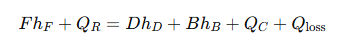
| (Fh_F) | feed가 가지고 들어오는 엔탈피 |
| (Q_R) | reboiler가 공급하는 열 |
| (Dh_D) | distillate가 가지고 나가는 엔탈피 |
| (Bh_B) | bottoms가 가지고 나가는 엔탈피 |
| (Q_C) | condenser에서 제거하는 열 |
| (Q_loss | 외부로 손실되는 열 |
이때 보통 Qloss는 무시한다. 그러면 피드 엔탈피+공급열=증류엔탈피+액체엔탈피+냉각기 열이라는 공식이 성립한다.
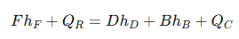
이때 중요한 것은 QR과 QC이며 이것이 듀티이다. 이때 보일러는 보통 파셜리보일러를 쓰는데, 콘덴서는 파셜인지 전체 콘덴서인지에 따라 듀티가 달라진다.
Total condenser duty:
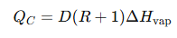
Partial condenser duty
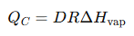
Partial reboiler duty
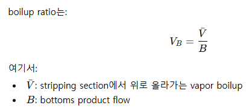 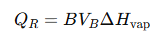
이때, 한 가지 중요한 케이스가 있다. Bubble-point feed + total condenser이면 QC와 QR가 거의 같아진다는 것이다.
QC=D(R+1)H 이고 QR=BVBH인데 bubble-point feed + total condenser 조건에서는 다음 관계가 성립한다.
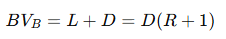
reboiler에서 만들어야 하는 vapor 양=condenser에서 응축해야 하는 vapor 양
반면 공급 피드가 partially vaporized feed라면? 그때는 QC=QR이 성립하지 않는다. 오히려 QC가 더 크다. 왜냐면 피드에 기체가 있음으로서 이를 더 냉각해야 되기 때문이다. 그래서 다음과 같은 관계가 성립하게 된다.
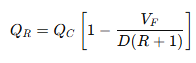
Dew-point vapor feed라면? 이 경우는 QR<QC가 여전히 성립한다. 왜냐면 피드가 전부 기체이기 때문이다. 피드가 싹다 액체(버블점)이어야 QC=QR이다.
그럼 반대로 과냉각액체이면? 그 경우에는 QR>QC이다. 더 가열해야 되기 때문이다.. 반대로 과열증기면 QR<QC이다.
보통 Feed preheat가 reboiler duty를 줄인다고 알려져있다. 이는 피드를 가열하면 QR이 줄어든다는 뜻인데, 당연하다. 피드를 미리 가열하면 VF가 증가하면서 QR=QC(1-VF/(D(R+1))에서 VF가 상승하면서 QR이 줄어든다.
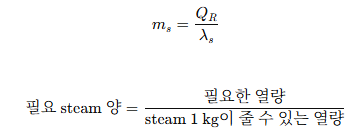
이때 열은 스팀으로 공급하므로, 위 식을 통해 스팀 필요량을 계산할 수 있다. 또한 냉각수 유량 계산은 Q=CMT로 한다.
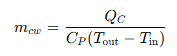
+ reflux를 많이 하면 분리는 좋아져서 필요한 단수는 줄 수 있지만, condenser와 reboiler duty는 증가한다.
| Bubble-point liquid feed + total condenser | (Q_R= Q_C) | feed가 vapor flow를 안 바꿈 |
| Partially vaporized feed | (Q_R<Q_C) | feed vapor가 일부 vapor를 제공 |
| Dew-point vapor feed | (Q_R<Q_C) | feed 전체가 vapor로 기여 |
| Subcooled liquid feed | (Q_R>Q_C) | 차가운 feed가 vapor 일부를 응축 |
| Superheated vapor feed | (Q_R<Q_C) | 뜨거운 feed가 liquid 일부를 vaporize |
따라서 최종 정리하면 다음과 같다.
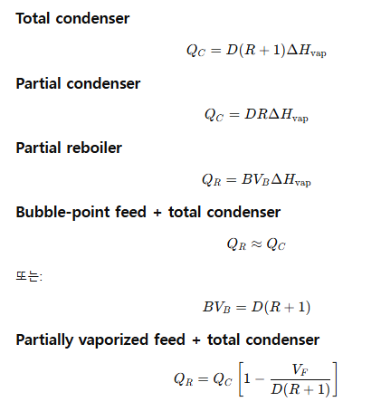